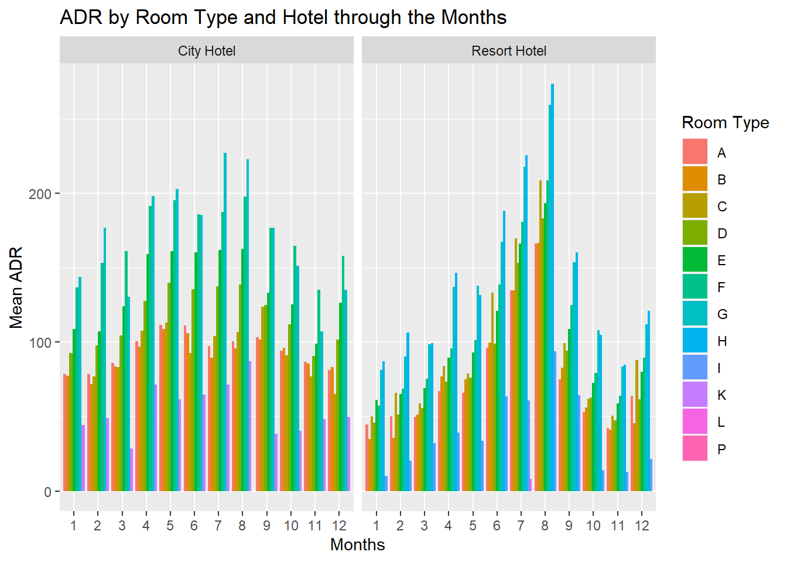

library(tidyverse)
library(lubridate)
library(ggplot2)
knitr::opts_chunk$set(echo = TRUE, warning=FALSE, message=FALSE)Challenge 7 Solutions
challenge_7
hotel_bookings
Visualizing Multiple Dimensions
Challenge Overview
Working with the Hotel data set as I had previously tidied it.
Read in data
# Reading in data
h_book <- read_csv("_data/hotel_bookings.csv", show_col_types = FALSE)
h_book# A tibble: 119,390 × 32
hotel is_ca…¹ lead_…² arriv…³ arriv…⁴ arriv…⁵ arriv…⁶ stays…⁷ stays…⁸ adults
<chr> <dbl> <dbl> <dbl> <chr> <dbl> <dbl> <dbl> <dbl> <dbl>
1 Resor… 0 342 2015 July 27 1 0 0 2
2 Resor… 0 737 2015 July 27 1 0 0 2
3 Resor… 0 7 2015 July 27 1 0 1 1
4 Resor… 0 13 2015 July 27 1 0 1 1
5 Resor… 0 14 2015 July 27 1 0 2 2
6 Resor… 0 14 2015 July 27 1 0 2 2
7 Resor… 0 0 2015 July 27 1 0 2 2
8 Resor… 0 9 2015 July 27 1 0 2 2
9 Resor… 1 85 2015 July 27 1 0 3 2
10 Resor… 1 75 2015 July 27 1 0 3 2
# … with 119,380 more rows, 22 more variables: children <dbl>, babies <dbl>,
# meal <chr>, country <chr>, market_segment <chr>,
# distribution_channel <chr>, is_repeated_guest <dbl>,
# previous_cancellations <dbl>, previous_bookings_not_canceled <dbl>,
# reserved_room_type <chr>, assigned_room_type <chr>, booking_changes <dbl>,
# deposit_type <chr>, agent <chr>, company <chr>, days_in_waiting_list <dbl>,
# customer_type <chr>, adr <dbl>, required_car_parking_spaces <dbl>, …Briefly describe the data
The following dataset has 119390 observations and 32 different fields. This is basically the data from two hotels - City Hotel & Resort Hotel. Each entry corresponds to a booking made by a customer. There are various information that are recorded with each booking. It includes the arrival date, number of days of stay, meal, type of room reserved, customer type, reservation status, number of adult/children and many more. The data consists of entries from countries all over the world.
Tidy Data (as needed)
In country, there are entries called NULL, which can be removed as it may not be useful for the analysis.
# in country we can see that there is a field call NULL that can be removed
table(h_book$country)
ABW AGO AIA ALB AND ARE ARG ARM ASM ATA ATF AUS AUT
2 362 1 12 7 51 214 8 1 2 1 426 1263
AZE BDI BEL BEN BFA BGD BGR BHR BHS BIH BLR BOL BRA
17 1 2342 3 1 12 75 5 1 13 26 10 2224
BRB BWA CAF CHE CHL CHN CIV CMR CN COL COM CPV CRI
4 1 5 1730 65 999 6 10 1279 71 2 24 19
CUB CYM CYP CZE DEU DJI DMA DNK DOM DZA ECU EGY ESP
8 1 51 171 7287 1 1 435 14 103 27 32 8568
EST ETH FIN FJI FRA FRO GAB GBR GEO GGY GHA GIB GLP
83 3 447 1 10415 5 4 12129 22 3 4 18 2
GNB GRC GTM GUY HKG HND HRV HUN IDN IMN IND IRL IRN
9 128 4 1 29 1 100 230 35 2 152 3375 83
IRQ ISL ISR ITA JAM JEY JOR JPN KAZ KEN KHM KIR KNA
14 57 669 3766 6 8 21 197 19 6 2 1 2
KOR KWT LAO LBN LBY LCA LIE LKA LTU LUX LVA MAC MAR
133 16 2 31 8 1 3 7 81 287 55 16 259
MCO MDG MDV MEX MKD MLI MLT MMR MNE MOZ MRT MUS MWI
4 1 12 85 10 1 18 1 5 67 1 7 2
MYS MYT NAM NCL NGA NIC NLD NOR NPL NULL NZL OMN PAK
28 2 1 1 34 1 2104 607 1 488 74 18 14
PAN PER PHL PLW POL PRI PRT PRY PYF QAT ROU RUS RWA
9 29 40 1 919 12 48590 4 1 15 500 632 2
SAU SDN SEN SGP SLE SLV SMR SRB STP SUR SVK SVN SWE
48 1 11 39 1 2 1 101 2 5 65 57 1024
SYC SYR TGO THA TJK TMP TUN TUR TWN TZA UGA UKR UMI
2 3 2 59 9 3 39 248 51 5 2 68 1
URY USA UZB VEN VGB VNM ZAF ZMB ZWE
32 2097 4 26 1 8 80 2 4 h_book <- h_book %>%
filter(!(country == "NULL"))Two fields, Agents and Company have numerical values in them, but have the datatype marked as character. These NULL entries can be changed to NA and the datatype can be changed to numeric. Also, the arrival date in year, month and date can be combined into a single field called as arrival date.
# combining the arrival date into a single field
# to find the total number of guests in the hotel - add adults, children and babies
h_book_mut <- h_book %>%
mutate(arrival_date = str_c(arrival_date_day_of_month,
arrival_date_month,
arrival_date_year, sep="/"),
arrival_date = dmy(arrival_date),
total_guests = adults + children + babies) %>%
select(-c(arrival_date_day_of_month,arrival_date_year))
h_book_mut# A tibble: 118,902 × 32
hotel is_ca…¹ lead_…² arriv…³ arriv…⁴ stays…⁵ stays…⁶ adults child…⁷ babies
<chr> <dbl> <dbl> <chr> <dbl> <dbl> <dbl> <dbl> <dbl> <dbl>
1 Resort… 0 342 July 27 0 0 2 0 0
2 Resort… 0 737 July 27 0 0 2 0 0
3 Resort… 0 7 July 27 0 1 1 0 0
4 Resort… 0 13 July 27 0 1 1 0 0
5 Resort… 0 14 July 27 0 2 2 0 0
6 Resort… 0 14 July 27 0 2 2 0 0
7 Resort… 0 0 July 27 0 2 2 0 0
8 Resort… 0 9 July 27 0 2 2 0 0
9 Resort… 1 85 July 27 0 3 2 0 0
10 Resort… 1 75 July 27 0 3 2 0 0
# … with 118,892 more rows, 22 more variables: meal <chr>, country <chr>,
# market_segment <chr>, distribution_channel <chr>, is_repeated_guest <dbl>,
# previous_cancellations <dbl>, previous_bookings_not_canceled <dbl>,
# reserved_room_type <chr>, assigned_room_type <chr>, booking_changes <dbl>,
# deposit_type <chr>, agent <chr>, company <chr>, days_in_waiting_list <dbl>,
# customer_type <chr>, adr <dbl>, required_car_parking_spaces <dbl>,
# total_of_special_requests <dbl>, reservation_status <chr>, …# mutating the datatype of the agent and company field from char to numeric
h_book_mut <- h_book_mut %>%
mutate(across(c(agent, company),~ replace(.,str_detect(., "NULL"), NA))) %>% mutate_at(vars(agent, company),as.numeric)
is.numeric(h_book_mut$agent)[1] TRUEis.numeric(h_book_mut$company)[1] TRUEVisualization with Multiple Dimensions
I had previously used only one two dimensions to visualize this dataset. I can add an additional dimension of the category of hotel to see the guest count arrival rate between “City Hotel” and “Resort Hotel”.
Firstly, I want to see how many guests are arriving over a period of time on a daily basis for each hotel separately.
plot1_data <- h_book_mut %>% select(hotel, total_guests, arrival_date) %>%
group_by(hotel, arrival_date) %>%
summarise(net_guests = sum(total_guests, na.rm=TRUE))
plot1_data# A tibble: 1,586 × 3
# Groups: hotel [2]
hotel arrival_date net_guests
<chr> <date> <dbl>
1 City Hotel 2015-07-01 143
2 City Hotel 2015-07-02 96
3 City Hotel 2015-07-03 28
4 City Hotel 2015-07-04 72
5 City Hotel 2015-07-05 15
6 City Hotel 2015-07-06 59
7 City Hotel 2015-07-07 35
8 City Hotel 2015-07-08 79
9 City Hotel 2015-07-09 92
10 City Hotel 2015-07-10 19
# … with 1,576 more rows# finding the date ranges of the arrival date of this data
summary(plot1_data$arrival_date) Min. 1st Qu. Median Mean 3rd Qu. Max.
"2015-07-01" "2016-01-15" "2016-07-31" "2016-07-31" "2017-02-14" "2017-08-31" p <- ggplot(plot1_data, aes(x=arrival_date, y=net_guests, color = hotel)) + ggtitle("Guest Count Vs. Arrival Date Trend: Jul 2015 - Jun 2016") +
geom_line() +
labs(y="Net Guests", x ="Date", color="Hotel") + theme(axis.text.x=element_text(angle=60, hjust=1)) +
scale_x_date(date_labels = "%Y %b %d", date_minor_breaks = "1 month", limit=c(as.Date("2015-07-01"),as.Date("2016-07-01")))
p
From the above plot, we can see a general trend that the number of incoming guests for the Resort Hotel are lower than that of the City Hotel. But during the first and last week of December and February, we can see that the number of incoming guests for Resort Hotel does peak higher than the City Hotel. This case can also be seen during the last week of March. These periods usually correspond to the Holiday period, where in this can be one indicator that people, prefer the Resort Hotel to the City Hotel.
Next we can try to find out during which months the total number of guests peak between the two hotels.
plot2_data <- h_book_mut %>% select(hotel, arrival_date_month, total_guests) %>%
group_by(hotel, arrival_date_month) %>%
summarise(net_guests = sum(total_guests, na.rm=TRUE))
plot2_data <- plot2_data %>% mutate(month = case_when(
arrival_date_month == "January" ~ 1,
arrival_date_month == "February" ~ 2,
arrival_date_month == "March" ~ 3,
arrival_date_month == "April" ~ 4,
arrival_date_month == "May" ~ 5,
arrival_date_month == "June" ~ 6,
arrival_date_month == "July" ~ 7,
arrival_date_month == "August" ~ 8,
arrival_date_month == "September" ~ 9,
arrival_date_month == "October" ~ 10,
arrival_date_month == "November" ~ 11,
arrival_date_month == "December" ~ 12,
TRUE ~ NA_real_
)) %>% arrange(month)
plot2_data$month <-as.character(plot2_data$month)
plot2_data# A tibble: 24 × 4
# Groups: hotel [2]
hotel arrival_date_month net_guests month
<chr> <chr> <dbl> <chr>
1 City Hotel January 6721 1
2 Resort Hotel January 3733 1
3 City Hotel February 9376 2
4 Resort Hotel February 5848 2
5 City Hotel March 12333 3
6 Resort Hotel March 6031 3
7 City Hotel April 15101 4
8 Resort Hotel April 6847 4
9 City Hotel May 15464 5
10 Resort Hotel May 6978 5
# … with 14 more rowsp <- ggplot(plot2_data, aes(fill=hotel,x=reorder(month, sort(as.numeric(month))), y=net_guests)) +
geom_bar(position="dodge", stat="identity") + labs(y="Number of Guests", x="Months", title="Monthly Trend of Number of Guests") + scale_fill_discrete(name = "Hotel")
p
From the above visualization we can see that for City Hotel, the distribution is fairly normal. However for the Resort Hotel, the distribution is somewhat uniform through all the months, with smaller peaks during the months of July and August.
Next, I want to find the average price per night for different rooms in both the hotels and also look at how the prices vary on a monthly basis. There are 9 room types (from A-L). First I group by room type and find the mean adr and then I group by the hotels.
plot3_data <- h_book_mut %>% select(hotel, arrival_date_month, assigned_room_type, adr) %>%
group_by(hotel, arrival_date_month, assigned_room_type) %>%
summarise(net_adr = mean(adr, na.rm=TRUE)) %>% mutate(month = case_when(
arrival_date_month == "January" ~ 1,
arrival_date_month == "February" ~ 2,
arrival_date_month == "March" ~ 3,
arrival_date_month == "April" ~ 4,
arrival_date_month == "May" ~ 5,
arrival_date_month == "June" ~ 6,
arrival_date_month == "July" ~ 7,
arrival_date_month == "August" ~ 8,
arrival_date_month == "September" ~ 9,
arrival_date_month == "October" ~ 10,
arrival_date_month == "November" ~ 11,
arrival_date_month == "December" ~ 12,
TRUE ~ NA_real_
)) %>% arrange(month)
plot3_data# A tibble: 205 × 5
# Groups: hotel, arrival_date_month [24]
hotel arrival_date_month assigned_room_type net_adr month
<chr> <chr> <chr> <dbl> <dbl>
1 City Hotel January A 78.5 1
2 City Hotel January B 77.3 1
3 City Hotel January D 92.8 1
4 City Hotel January E 109. 1
5 City Hotel January F 137. 1
6 City Hotel January G 144. 1
7 City Hotel January K 44.2 1
8 Resort Hotel January A 44.8 1
9 Resort Hotel January B 34.9 1
10 Resort Hotel January C 50.1 1
# … with 195 more rowsp <- ggplot(plot3_data, aes(fill=assigned_room_type,x=reorder(month, sort(as.numeric(month))), y=net_adr)) +
geom_bar(position="dodge", stat="identity") + labs(y="Mean ADR", x="Months", title="ADR by Room Type and Hotel through the Months") + scale_fill_discrete(name = "Room Type") + facet_wrap( ~ hotel)
p
The above plot is to compare the prices of different rooms between the two hotels across various months. Generally we can see that the prices of the rooms tend to peak in the month of July and August for both the hotels. From the previous plot, it was seen that the number of guests are also high during this time. This could be probably be one of the reasons why the prices shoot up during those months. While the prices for the different rooms are fairly the same throughout the different months for City Hotel. Whereas for Resort Hotel, the prices for the different rooms follow a normal distribution.